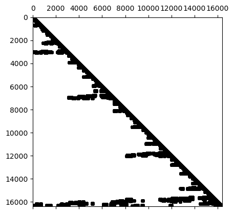
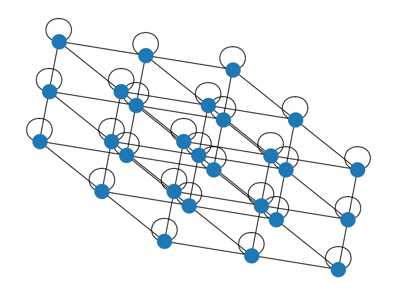
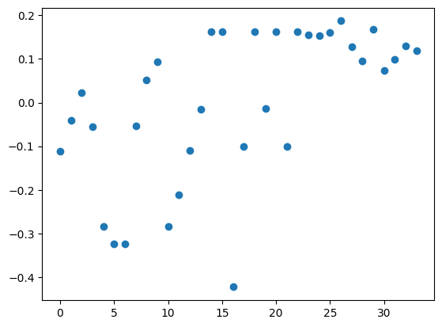

Прямые методы для разреженных матриц: LU разложение
Почему разреженные линейные системы можно решать быстрее, какова методика?
В LU разложении матрицы A множители L и U также могут быть разреженными:
A = L U
И решение линейных систем с разреженными треугольными матрицами очень простое.
Обратите внимание, что обратная матрица к разреженной матрице не является разреженной!
import numpy as npimport scipy.sparse as spspn =4ex = np.ones(n);#a = spsp.spdiags(np.vstack((ex, np.random.rand(n), np.random.rand(n))), [-1, 0, 1], n, n, 'csr'); a = spsp.spdiags(np.vstack((-ex, 2*ex, -ex)), [-1, 0, 1], n, n, 'csr');#a = spsp.spdiags(np.vstack((-ex, 2*ex, -ex), np.random.rand(n)), [-1, 0, 1], n, n, 'csr'); b = np.array(np.linalg.inv(a.toarray()))print(a.toarray())print(b)np.linalg.svd(b[:3, 4:])[1]
From a matrix that comes as a discretization of a two-dimensional problem everything is much worse:
import scipy as spimport scipy.sparse as spspimport scipy.sparse.linalgimport matplotlib.pyplot as plt%matplotlib inlinen =128ex = np.ones(n);lp1 = sp.sparse.spdiags(np.vstack((ex, -2*ex, ex)), [-1, 0, 1], n, n, 'csr');e = sp.sparse.eye(n)A = sp.sparse.kron(lp1, e) + sp.sparse.kron(e, lp1)A = spsp.csc_matrix(A)T = spsp.linalg.splu(A)#, permc_spec="NATURAL")plt.spy(T.L, marker='.', color='k', markersize=8)T.L#plt.spy(A, marker='.', color='k', markersize=8)
<Compressed Sparse Column sparse matrix of dtype 'float64'
with 610620 stored elements and shape (16384, 16384)>

Для правильной перестановки в двумерном случае количество ненулевых элементов в множителе L растет как \mathcal{O}(N \log N). Но сложность составляет \mathcal{O}(N^{3/2}).
Основная задача: как сделать множители L и U максимально разреженными?
Основной инструмент для анализа разреженности множителей: теория графов
Количество ненулевых элементов в LU-разложении имеет глубокую связь с теорией графов.
Пакет networkx может использоваться для визуализации графов, имея только матрицу смежности.
Он даже может в некоторой степени восстановить структуру графа.
import networkx as nximport scipy as spn =3ex = np.ones(n);lp1 = sp.sparse.spdiags(np.vstack((ex, -2*ex, ex)), [-1, 0, 1], n, n, 'csr');e = sp.sparse.eye(n)A = sp.sparse.kron(sp.sparse.kron(lp1, e), e) + sp.sparse.kron(sp.sparse.kron(e, lp1), e) + sp.sparse.kron(sp.sparse.kron(e, e), lp1)A = spsp.csc_matrix(A)G = nx.Graph(A)nx.draw(G, pos=nx.spectral_layout(G))#, node_size=1)

Что такое заполнение?
Заполнение матрицы - это те элементы, которые изменяются с нулевого на ненулевое значение во время выполнения алгоритма.
Заполнение различно для разных перестановок. Поэтому перед факторизацией нам нужно найти такое переупорядочение, которое даёт наименьшее заполнение.
Если мы исключаем элементы сверху вниз, то получим плотную матрицу. Однако мы могли бы сохранить разреженность, если бы исключение выполнялось снизу вверх.
Пример плотных множителей после LU-разложения
Для матрицы A=A^*>0 мы вычисляем её разложение Холецкого A = LL^*.
Множитель L может быть плотным, даже если A разреженная:
Как сделать множители разреженными, т.е. минимизировать заполнение?
Почему перестановки могут уменьшить заполнение? Вот пример…
Нам нужно найти перестановку индексов так, чтобы множители были разреженными, т.е. мы строим разложение Холецкого для PAP^\top, где P - матрица перестановки.
Блок $ A_{33} - A_{31}A_{11}^{-1} A_{13} - A_{32}A_{22}^{-1}A_{23}$ является дополнением Шура для блочно-диагональной матрицы \begin{bmatrix} A_{11} & 0 \\ 0 & A_{22} \end{bmatrix}
Мы сводим задачу к решению систем линейных уравнений меньшего размера с матрицами A_{11} и A_{22}
Что мы можем сделать для минимизации заполнения?
Переупорядочение строк и столбцов разреженной матрицы с целью уменьшения количества ненулевых элементов в множителях L и U называется минимизацией заполнения (fill-in).
К сожалению, эта статья Роуза и Тарьяна 1975 года доказывает, что задача минимизации заполнения является NP-полной.
Но существует множество эвристик:
Выбор ведущего элемента по Марковицу - упорядочение по произведению ненулевых элементов в столбце и строке с ограничением устойчивости
Упорядочение по минимальной степени - упорядочение по степени вершины
Алгоритм Катхилла-Макки (и обратный Катхилла-Макки) - переупорядочение для минимизации ширины ленты (не использует представление графа).
Вложенное разбиение: разделение графа на две части с минимальным числом вершин на разделителе (набор вершин, удаляемых после разделения графа на два отдельных связных графа). Сложность алгоритма зависит от размера разделителя графа. Для одномерного лапласиана разделитель содержит только 1 вершину, в двумерном случае - \sqrt{N} вершин.
Как найти перестановку?
Ключевая идея приходит из теории графов
Разреженную матрицу можно рассматривать как матрицу смежности определенного графа: вершины (i, j) соединены, если соответствующий элемент матрицы ненулевой.
Минимизация верхней границы заполнения: выбор ведущего элемента по Марковицу
Универсальный подход к упорядочиванию элементов разреженной матрицы, которые будут исключены
Показатель Марковица для каждого ненулевого элемента с индексами (i, j) вычисляется как (r_i - 1)(c_j - 1), где r_i - количество ненулевых элементов в i-й строке, а c_j - количество ненулевых элементов в j-м столбце
Это значение является верхней границей заполнения после исключения элемента (i, j). Почему?
Мы можем упорядочить элементы относительно этих значений, выбрать элемент с минимальным значением, исключить его и обновить матрицу. А как насчет устойчивости?
Затем пересчитать эти значения и повторить процедуру
Этот метод дает нам перестановки строк и столбцов и разреженные множители
Основной недостаток - эффективное отслеживание количества ненулевых элементов в каждой строке и столбце после обновления матрицы без полного пересчета
Де-факто стандартный подход при решении задач линейного программирования (LP) и их MILP-модификаций
Что если рассматривать только соседей? Получаем упорядочение по минимальной степени!
Идея заключается в исключении строк и/или столбцов с меньшим количеством ненулевых элементов, обновлении заполнения и повторении процесса. Как это связано с выбором ведущего элемента по Марковицу?
Эффективная реализация является проблемой (добавление/удаление элементов).
Текущий лидер - “приближенная минимальная степень” от Аместоя, Дэвиса, Даффа.
Это неоптимально даже для задач с двумерными дифференциальными уравнениями в частных производных
Пакет SciPy sparse использует подход минимального упорядочения для различных матриц (A^{\top}A, A + A^{\top})
Но в этих методах мы игнорируем знание о хорошей структуре для разреженного LU! Давайте явно используем его в методе!
Как формализовать сведение к блочной форме со стрелкой?
Определение.Сепаратор в графе G - это множество S вершин, удаление которых оставляет как минимум две несвязные компоненты.
Сепаратор S дает следующий порядок для графа G с N вершинами: - Найти сепаратор S, удаление которого оставляет связные компоненты T_1, T_2, \ldots, T_k - Пронумеровать вершины S от N − |S| + 1 до N - Рекурсивно пронумеровать вершины каждой компоненты: T_1 от 1 до |T_1|, T_2 от |T_1| + 1 до |T_1| + |T_2| и т.д. - Если компонента достаточно мала, нумерация в этой компоненте произвольна
Сепаратор и блочная структура со стрелкой: пример
Сепаратор для двумерной матрицы Лапласа
A_{2D} = I \otimes A_{1D} + A_{1D} \otimes I, \quad A_{1D} = \mathrm{tridiag}(-1, 2, -1),
выглядит следующим образом
Как только мы пронумеровали сначала индексы в \alpha, затем в \beta и индексы сепаратора в \sigma, мы получаем следующую матрицу
Все они имеют интерфейсы для C/C++, Fortran и Matlab
Краткое описание вложенного разбиения
Нумерация: найти сепаратор.
Парадигма “разделяй и властвуй”
Рекурсивная обработка двух подмножеств вершин после разделения
В теории вложенное разбиение дает оптимальную сложность.
На практике оно превосходит другие методы только для очень больших задач.
Сепараторы на практике
Вычисление сепараторов - нетривиальная задача.
Эвристики разбиения графов являются активной областью исследований на протяжении многих лет, часто мотивированные разбиением для параллельных вычислений.
Существующие подходы:
Спектральное разбиение (использует собственные векторы матрицы Лапласа графа) - подробнее ниже
Геометрическое разбиение (для сеток с заданными координатами вершин) обзор и анализ
Многоуровневое рекурсивное бисекционирование (эвристика, в настоящее время наиболее практичная) (обзор и статья). Пакет для такого рода разбиения называется METIS, написан на C и доступен здесь
Один из способов построения сепараторов – спектральное разбиение графа
Идея спектрального разбиения восходит к Мирославу Фидлеру, который изучал связность графов (статья).
Нам нужно разделить вершины на два множества.
Рассмотрим маркировку вершин значениями +1/-1 и стоимость
E_c(x) = \sum_{j} \sum_{i \in N(j)} (x_i - x_j)^2, \quad N(j) \text{ обозначает множество соседей узла } j.
Нам нужно сбалансированное разбиение, поэтому
\sum_i x_i = 0 \quad \Longleftrightarrow \quad x^\top e = 0, \quad e = \begin{bmatrix}1 & \dots & 1\end{bmatrix}^\top,
и поскольку у нас метки +1/-1, имеем
\sum_i x^2_i = n \quad \Longleftrightarrow \quad \|x\|_2^2 = n.
Лапласиан графа
Стоимость E_c может быть записана как (проверьте почему)
E_c = (Lx, x)
где L - это лапласиан графа, который определяется как симметричная матрица с
L_{ii} = \mbox{степень вершины $i$},
L_{ij} = -1, \quad \mbox{если $i \ne j$ и существует ребро},
и 0 в остальных случаях.
Сумма элементов в строках L равна нулю, поэтому существует собственное значение 0, которому соответствует тривиальный собственный вектор из всех единиц.
Собственные значения неотрицательны (почему?).
Разбиение как задача оптимизации
Минимизация E_c с указанными ограничениями приводит к разбиению, которое пытается минимизировать количество рёбер в сепараторе, сохраняя при этом сбалансированность разбиения.
Теперь мы ослабляем целочисленное квадратичное программирование до непрерывного квадратичного программирования
Решение задачи минимизации даётся собственным вектором (называемым вектором Фидлера), соответствующим второму наименьшему собственному значению лапласиана графа. Действительно,
\min_{\substack{x^\top e =0, \\ \|x\|_2^2 = n}} (Lx, x) = n \cdot \min_{{x^\top e =0}} \frac{(Lx, x)}{(x, x)} = n \cdot \min_{{x^\top e =0}} R(x), \quad R(x) \text{ это отношение Рэлея}
Поскольку e является собственным вектором, соответствующим наименьшему собственному значению, на пространстве x^\top e =0 мы получаем второе минимальное собственное значение.
Знак x_i указывает на разбиение.
В вычислениях нам нужно выяснить, как найти это второе минимальное собственное значение — мы по крайней мере знаем о степенном методе, но он находит наибольшее. Мы обсудим итерационные методы для задач на собственные значения позже в нашем курсе.
Это основная цель итерационных методов для крупномасштабных линейных задач, и она может быть достигнута с помощью нескольких произведений матрицы на вектор.
import numpy as np%matplotlib inlineimport matplotlib.pyplot as pltimport networkx as nxkn = nx.read_gml('karate.gml')print("Number of vertices = {}".format(kn.number_of_nodes()))print("Number of edges = {}".format(kn.number_of_edges()))nx.draw_networkx(kn, node_color="red") #Draw the graph
The 2 smallest eigenvalues = [2.52665709e-17 4.68525227e-01 9.09247664e-01]
#plt.scatter(np.arange(len(eigvec[:, 1])), np.sign(eigvec[:, 1]))plt.scatter(np.arange(len(eigvec[:, 1])), eigvec[:, 1])plt.show()print("Sum of elements in Fiedler vector = {}".format(np.sum(eigvec[:, 1].real)))

Sum of elements in Fiedler vector = -8.493206138382448e-15
Здесь мы вызываем функцию SciPy sparse для нахождения фиксированного числа собственных значений (и собственных векторов), которые являются наименьшими (возможны и другие варианты)
Детали используемого метода мы обсудим в ближайшее время
Вектор Фидлера дает простое разделение графа
Чтобы разделить граф на более чем две части, вы должны использовать собственные векторы лапласиана как векторы признаков и запустить какой-нибудь алгоритм кластеризации, например, k-средних
От вектора Фидлера к разделителю
Элементы собственного вектора v, соответствующего второму наименьшему собственному значению лапласиана, указывают на разбиение вершин
Если мы выберем некоторое малое положительное \tau >0, то мы можем разделить вершины на три группы
v_i < -\tau
v_i \in [-\tau, \tau]
v_i > \tau
После этого разделитель состоит из вершин, соответствующих элементам v таким, что v_i \in [-\tau, \tau]
Размер разделителя можно регулировать величиной \tau
Распределение элементов в v важно для определения размера разделителя
Вектор Фидлера и алгебраическая связность графа
Определение. Алгебраическая связность графа - это второе наименьшее собственное значение матрицы Лапласиана.
Утверждение. Алгебраическая связность графа больше 0 тогда и только тогда, когда граф является связным.
Практические проблемы
Рекурсивное вычисление бисекции является дорогостоящим.
В качестве альтернативы обычно вычисляют многоуровневую бисекцию, которая состоит из 3 фаз.
Огрубление графа: Из данного графа мы объединяем вершины в более крупные узлы и получаем последовательности графов G_1, \ldots, G_m.
На грубом уровне мы выполняем высококачественную бисекцию
Затем мы выполняем разукрупнение: мы распространяем разделение от G_k к G_{k-1} и улучшаем качество разделения с помощью алгоритмов локальной оптимизации (уточнение).
Практические проблемы (2)
После вычисления перестановки нам необходимо реализовать исключение, используя эффективные вычислительные ядра.
Если в процессе исключения мы сможем сгруппировать элементы в блоки, мы сможем использовать вычисления BLAS-3.
Это делается с помощью суперузловых структур данных:
Если соседние строки имеют одинаковую структуру разреженности, их можно хранить в блоках:
Также мы можем использовать такую структуру в эффективных вычислениях!
Упорядочивание важно для заполнения при LU-разложении: подробнее в следующей лекции
Выбор ведущего элемента по Марковицу и упорядочивание минимальной степени
Методы упорядочивания из пакета SciPy sparse
Сепараторы и как они помогают в минимизации заполнения
Идея вложенного разбиения
Вектор Фидлера и спектральное разбиение на части
Вопросы?
from IPython.core.display import HTMLdef css_styling(): styles =open("./styles/custom.css", "r").read()return HTML(styles)css_styling()
---------------------------------------------------------------------------FileNotFoundError Traceback (most recent call last)
Cell In[1], line 5 3 styles =open("./styles/custom.css", "r").read()
4return HTML(styles)
----> 5css_styling()
Cell In[1], line 3, in css_styling() 2defcss_styling():
----> 3 styles =open("./styles/custom.css","r").read()
4return HTML(styles)
File ~/miniconda3/envs/teaching/lib/python3.11/site-packages/IPython/core/interactiveshell.py:282, in _modified_open(file, *args, **kwargs) 275if file in {0, 1, 2}:
276raiseValueError(
277f"IPython won't let you open fd={file} by default " 278"as it is likely to crash IPython. If you know what you are doing, " 279"you can use builtins' open." 280 )
--> 282returnio_open(file,*args,**kwargs)FileNotFoundError: [Errno 2] No such file or directory: './styles/custom.css'